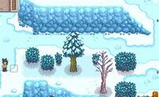

La Cueillette est la Compétence associée à la collecte de ressources sauvages trouvées sur le sol dans toute la vallée de Stardew, et à l'abattage d'arbres. Les compétences de recherche de nourriture augmentent également en récoltant des cultures issues de Graines Sauvages.
La plupart des denrées alimentaires sont présentes tout au long de la saison. La baie de saumon est une exception. On ne la trouve que pendant la saison de la baie de saumon (15-18 Printemps) dans les buissons autour de la ville. Les mûres peuvent être trouvées sur le sol pendant l'Automne, mais pendant la saison des mûres (8-11 Automne), elles peuvent également être trouvées sur les buissons dans toute la ville.
Qualité
La qualité des produits se décline en quatre niveaux : normaux, argent, or et iridium. Cependant, seuls les joueurs qui ont choisi la profession Botaniste peuvent trouver la qualité iridium des produits de cueillette. Les biens de meilleure qualité se vendent à des prix plus élevés et offrent davantage d'énergie et de santé lorsqu'ils sont consommés. Si un produit de qualité supérieure est donné comme un cadeau à un PNJ qui aime ou adore, il fournit un nombre plus élevé de points d'amitié.
La  profession Botaniste applique la qualité iridium à :
profession Botaniste applique la qualité iridium à :
La profession Botaniste n'applique pas la qualité iridium aux cas suivants :
Ratio qualité
Pour les joueurs sans profession de botaniste, le jeu teste d'abord la qualité de l'or selon la formule suivante : niveau de cueillette / 30. Si le test échoue, le jeu teste la qualité de l'argent, selon la formule suivante : niveau de cueillette / 15 et non pas d'or, ou (niveau de cueillette de 1/30) * niveau / 15. Si les deux vérifications échouent, l'élément ramassé sera de qualité normale.
Le tableau ci-dessous indique les probabilités d'obtenir chaque qualité de marchandise cueillie.
| Niveau de cueillette
|
% Régulière
|
%  Argent Argent
|
%  Or Or
|
| 0
|
100 %
|
0 %
|
0 %
|
| 1
|
90 %
|
7 %
|
3 %
|
| 2
|
81 %
|
12 %
|
7 %
|
| 3
|
72 %
|
18 %
|
10 %
|
| 4
|
64 %
|
23 %
|
13 %
|
| 5
|
55 %
|
28 %
|
17 %
|
| 6
|
48 %
|
32 %
|
20 %
|
| 7
|
41 %
|
36 %
|
23 %
|
| 8
|
34 %
|
39 %
|
27 %
|
| 9
|
28 %
|
42 %
|
30 %
|
| 10
|
22 %
|
45 %
|
33 %
|
| 11
|
17 %
|
46 %
|
37 %
|
| 12
|
12 %
|
48 %
|
40 %
|
| 13
|
8 %
|
49 %
|
43 %
|
| 14
|
3%
|
50%
|
47%
|
| 15
|
0%
|
50%
|
50%
|
 Compétence cueillette
Compétence cueillette
Chaque niveau ajoute +1 d'efficience à la hache. Votre menu de compétences montre immédiatement le niveau actuel. Les effets de la montée de niveau sont immédiats.
 Les flèches traqueuses (côté droit de l'écran)
Profession Traqueur
La profession Traqueur rend les lieux de récoltes plus faciles à trouver en ajoutant des petites flèches jaunes sur le bord de l'écran, pointant chacun sur un élément récoltable ainsi que tous les lieux d'artefacts (incluant ceux dont la zone est inaccessible pour le moment). une petite flèche similaire verte pointe vers les lieux de lumières scintillantes pour le tamis. Le suivi ne fonctionne pas pour les arbustes portant des baies.
Points d'expérience
Les points d'expérience sont répartis comme suit :
- 14 XP en abattant des Arbres avec une hache (accordés d'un coup lorsque le dernier coup de hache fait tomber l'arbre).
- 2 XP en retirant la souche restante après l'abattage d'un arbre.
- 1 XP pour chaque brindille dégagée.
- 1 XP pour chaque morceau de Mousse récupéré d'un arbre.
- 1 XP par baie récoltée en secouant des buissons de Mûres et de Baies de saumon dans leurs saisons respectives.
- 25 XP en retirant des Grandes souches et des Grande bûches.
- 7 XP pour chaque objet de cueillette ramassé au sol.
- Si la profession Chasseur-cueilleur double le gain de cueillette, 7 XP sont aussi donnés pour l'objet supplémentaire.
- 7 XP pour chaque Gingembre récolté.
- 3 XP pour chaque Oignon nouveau récoltés dans la Forêt Sève-Cendreuse au Printemps.
- 2 XP pour les items issus de Graines sauvages (+ 3 XP d'Agriculture)
- Si la profession Chasseur-cueilleur double le gain de cueillette, 2 XP sont aussi donnés pour l'objet supplémentaire.
- 7 XP pour chaque objet récupéré grâce au Tamis. Par exemple si le joueur obtient 3 objets en tamisant, il recevra 21 XP.
- 5 XP pour chaque champignon récolté dans la Grotte si l'option des champignons a été choisie, et des Bûches à champignons.
- 7 XP pour chaque fruit récolté dans la Grotte si l'option des chauve-souris a été choisie.
- 15 XP en creusant un Lieu de graines ou un Lieu d'artefacts.
- 15 XP en détruisant une mauvaise herbe géante de la Pluie verte. [1]
- 250 XP en lisant une copie du livre L'hebdomadaire du bûcheron ou du Livre des étoiles.
Les 7 XP pour les objets de cueillette s'appliquent uniquement aux objets visibles au sol qui seront ramassés si le joueur clique dessus; ils ne s'appliquent pas aux objets tombés par terre (par exemple qui tomberaient en secouant un arbre ou un buisson), qui sont ajoutés automatiquement à l'inventaire du joueur par magnétisme. Les objets spécifiques qui accordent les 7 XP sont :
Les objets suivants ne donnent PAS d'expérience de cueillette :
Nourriture
Certains plats cuisinés augmentent temporairement le niveau de cueillette. C'est utile pour augmenter l'efficacité de la hache, ou pour récupérer plus de baies sur chaque buisson de baies de saumon ou de mûres durant leurs saisons respectives (augmenté jusqu'à un maximum de 4 baies par récolte avec un niveau de 12-13 en cueillette).
Apparition
Les nouveaux articles de cueillette peuvent potentiellement apparaître la nuit sur n'importe quelle carte extérieure .[2] Cette section décrit les règles utilisées pour faire apparaître tout les articles typiques de cueillette. Cependant, les éléments spécialisés sont traités différemment et sont décrits sur leurs pages individuelles, à savoir l'Oignon nouveaus dans la forêt Sève-Cendreuse; Le corail, l'oursins et les algues à la plage; les fruits dans La grotte de la ferme; tout les articles cueillable dans la ferme forêstière. Également, les buissons de baie de saumon, de mûre, les racines d'hiver, et Ignames des neiges ne peuvent pas générer d'objets individuels.
Il y a une limite stricte de six objets à cueillir standard par carte (zones délimitées par les transitions d'écran), donc laisser des objets non collectés peut réduire le nombre de nouveaux objets. Tant qu'il y a au plus deux objets non collectés sur une carte, le jeu essaie de générer 1 à 4 nouveaux objets par nuit. La limite supérieure est réduite de un pour chaque élément supplémentaire non collecté. Cependant, chacunes des tentatives peut échouer pour trouver un élément et un emplacement valides, de sorte que le nombre réel de nouveaux éléments est généralement plus petit.
Seul un sous-ensemble de toutes les tuiles sur chaque carte sont des lieux d'apparition valides. Sur la plupart des cartes, les objets à cueillir ne peuvent apparaître que sur les tuiles vertes (type-herbeux), et en fait uniquement sur certains types spécifiques de carreaux verts. La plage et le desert font exception, où l'apparition est possible sur la plupart des tuiles jaune (type-sableux). Les articles n'apparaissent pas sur des tuiles déjà occupées (arbres, coffres, mauvaise herbe, bâtons, pierres, etc.) Ils n'apparaissent jamais non plus dans des tuiles cachées derrière des bâtiments, des buissons, des arbres non amovibles ou d'autres éléments permanents. Ils peuvent apparaître derrière des arbres amovibles (ceux qui peuvent être coupés ; ils deviennent également semi-transparents lorsque le joueur marche derrière eux), mais le taux d'apparition est 90% plus petit dans environ la moitié des tuiles derrière un arbre.
Par conséquent, la fraction de tuiles valides diffère pour chaque carte, ce qui affecte directement la probabilité que des objets apparaissent sur chaque carte. Il est également affecté par les actions du joueur. Enlever les débris (mauvaises herbes, etc.) et abattre les arbres peut augmenter le nombre de tuiles valides, alors que placer de l'équipement (coffres, etc.) peut en diminuer le nombre. La plantation d'arbres peut également avoir un effet : même si (sur la plupart des cartes) les arbres ne peuvent être plantés que dans des tuiles où les objets fourragers ne peuvent pas apparaître, ils réduisent les chances d'apparition dans certaines tuiles derrière l'arbre (et rendent également difficile la recherche d'objets qui apparaissent). Cependant, ces effets sont généralement faibles, à moins qu'une grande partie des tuiles de la carte ne soit occupée. Tous les taux d'apparition sont calculés en supposant que les arbres par défaut sont en place et complètement développés, mais que toutes les autres tuiles sont effacées.
Tous les objets à cueillir non collectés sont supprimés de la carte pendant la nuit avant le dimanche matin et avant le premier jour d'une saison.[3] Ce nettoyage s'applique à la fois aux articles à cueillir standards et à presque tous les articles spécialisés (les fruits dans La grotte de la ferme c'est ma seule exception connue). Même les articles non spécifiques à la saison sont supprimés au début d'une nouvelle saison. Afin d'aider à repeupler la carte, les chances d'apparition de nouveaux objets sont légèrement plus élevées ces jours-ci.
Les objets de cueillette seront détruits s'ils se trouvent sur le chemin d'un villageois.
Objets cueillis
Lorsque des pourcentages sont fournis pour les emplacements dans les tableaux suivants, ils représentent le pourcentage de tous les objets de cueillette générés à cet emplacement qui seront (en moyenne) l'objet spécifié.[5]
Basique
Printemps
Été
Automne
Hiver
La plage
Les mines
- Voir aussi: Minéraux cueillis
Désert de Calico
Île Gingembre
Du Corail et Oursin peut être ramassé sur la plage dans la partie Ouest de l'Île. Des Crosse de fougère peuvent être trouvées dans la jungle à l'Est. La liste suivante ne montre que les objets de cueillette exclusifs à l'Île Gingembre.
Bug
- La profession Chasseur-cueilleur peut entraîner une duplication d'objets qui ne sont pas des objets de cueillette. Lorsque cela arrive, le joueur gagne 7 XP pour l'objet dupliqué, même si l'objet original n'en accorde pas. Les objets concernés par ce bug se trouvent dans les Mines, notamment le Quartz, Cristal de terre, Quartz de feu, Larme gelée, et Oeuf de dinosaure.
- Les autres objets trouvés au sol dans les Mines, notamment Champignon rouge, Champignon violet, et Crosse de fougère, sont considérés comme des objets de cueillette, donc ils accorderont de l'expérience et la duplication avec cette profession n'est pas un bug.
Liens externes
- Les utilisateurs ayant accès à leur fichiers de jeu peuvent utiliser l'outil "Forage Finder" pour trouver l'emplacement de tous les objets de cueillette pour le jour de jeu suivant. L'utilitaire est situé à l'adresse suivante : https://stardew.selbysaurus.me/
Réferences
- ↑ Voir TerrainFeatures.ResourceClump::destroy dans le code du jeu.
- ↑ L'apparition des objets de cueillette standard ce font dans GameLocation::spawnObjects, qui est déclenché par GameLocation::dayUpdate. La limite de six éléments par carte est contrôlée par numberOfSpawnedObjectsOnMap. Le nombre de tentatives pour ajouter un élément est un nombre aléatoire allant de 1 à minimum(4, 6-numberOfSpawnedObjectsOnMap). Pour chaque tentative, le code vérifie jusqu'à 11 emplacements situés au hasard n'importe où sur la carte. Un article n'est placé que si l'un de ces 11 emplacements est un emplacement d'apparition valide et si un article fourrager sélectionné au hasard réussit également son test de probabilité.
- ↑ L'enlèvement en fin de semaine des objets à fourrer fait partie de GameLocation::dayUpdate. L'enlèvement en fin de saison des objets à fourrer fait partie de gameLocation::seasonUpdate. Tout les articles avec le tag IsSpawnedObject seront supprimés, et numberOfSpawnedObjectsOnMap est remis à zero.
- ↑ Les objets de cueillette qui peuvent apparaître à un endroit donné chaque saison sont déterminés par GameLocation::spawnObjects dans le code du jeu, en utilisant l'entrée du fichier de données Content\Locations.xnb. Les pourcentages fournis ici ont été normalisés pour garantir que les pourcentages totalisent 100% pour chaque saison dans chaque emplacement. Les données ont été normalisées par :
- Calcul de la somme de tous les pourcentages répertoriés dans Locations.xnb pour la saison
- Division de chaque pourcentage par la somme
Historique
- 1.3 : Détruire une souche d'arbre standard donne désormais +1 d'expérience de Cueillette.
- 1.4 : Correction du bug qui empêchait les arbres de lâcher des graines et faisait disparaître les graines récoltées si un niveau de cueillette était gagné durant la journée. Change le son de la cueillette d'objet pour un pitch plus haut. La profession Forestier a changé de "Le bois vaut 50% de plus" à "25% de bois récupéré en plus".
- 1.6 : Botaniste affecte les objets obtenus en secouant les arbres fruitiers. Secouer des buissons donne maintenant 1 XP par baie récoltée. Les objets de cueillette obtenus en faisant pousser des graines sauvages donnent 2 XP au lieu de 7, mais donnent aussi de l'expérience d'agriculture. Les champignons de la grotte donnent 5 XP chacun.La recette d'Hamburger de survie est apprise au niveau 8 au lieu du niveau 2. La recette du fourneau à charbon est apprise au niveau 2 au lieu de 4. Le kit de cuisson est appris au niveau 3 au lieu de 9. Le saigneur est appris au niveau 4 au lieu de 3. Les éléments de cueillette redonnant de l'énergie peuvent être transformés en gelée ou cornichon. Les éléments de cueillette redonnant de l'énergie (sauf les champignons) peuvent être transformés en jus. Les fruits cueillis et les champignons redonnant de l'énergie peuvent être séchés. Les algues ramassées sont toujours de qualité normale. De l'expérience de cueillette peut être gagnée en lisant l'hebdomadaire du bûcheron, ou le livre des étoiles.
- 1.6.3 : Récolter de la mousse donne 1 XP de cueillette par mousse ramassée.
- 1.6.12 : Creuser des lieux de graines ou des lieux d'artefacts, tamiser, récolter du gingembre, et couper des débris donnent maintenant de l'expérience de cueillette. Abattre un arbre donne maintenant 14 XP au lieu de 12 et détruire les souches donne 2 XP au lieu de 1.